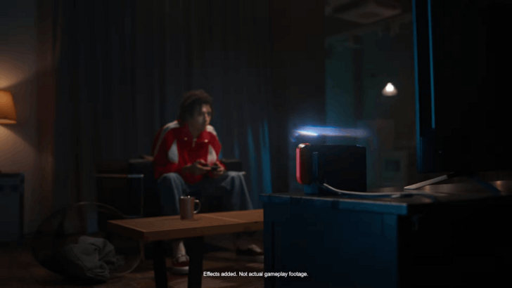

Disponibilidad
Pokémon Champions estará disponible en Nintendo Switch, iOS y Android.
El juego permitirá batallas multiplataforma entre Nintendo Switch y dispositivos móviles, por lo que podrás competir con jugadores de ambas plataformas.
Conectividad con Pokémon HOME
Se confirmó que Pokémon Champions soportará transferencias mediante Pokémon HOME.
Los entrenadores podrán conectar sus Pokémon desde títulos como Pokémon GO, Pokémon Escarlata y Púrpura, y otros juegos anteriores para usarlos en batallas.

Rostro inicial limitado
Al lanzamiento solo estarán disponibles ciertos Pokémon seleccionados, lo que indica que el roster y la Pokédex inicial serán limitados pero probablemente se expandirán con el tiempo.

El regreso de las Mega Evoluciones
Las Mega Evoluciones vuelven, una característica no vista desde Pokémon Ultra Sol y Ultra Luna. En el tráiler, el Charizard del entrenador megaevoluciona a Mega Charizard X.
Además, se mostraron otras mecánicas familiares como las batallas dobles y los Pokémon Tera.